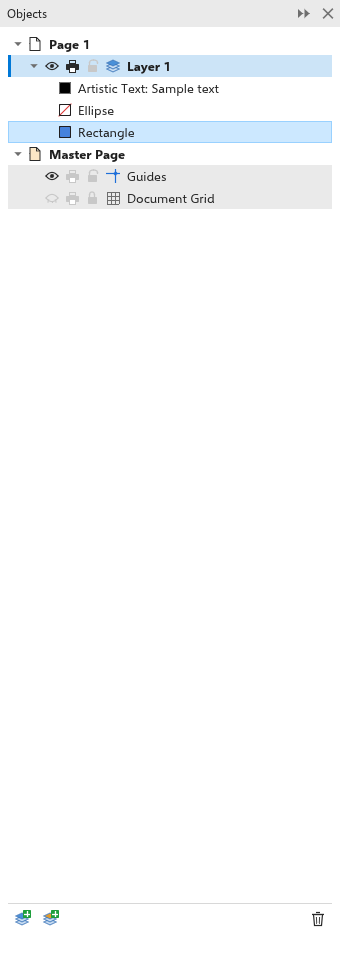
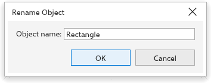

Diese Seite ist noch nicht übersetzt und wird auf Englisch angezeigt.
Organizing objects and layers
The Objects panel shows how the current page is organized: its layers, the objects on each layer, the groups and the master layers that appear on every page. Use it to select, name, hide, lock and order objects and layers. Objects higher in the list are drawn in front.

The Objects panel
The panel lists the page with its layers, topmost first, then the Master Page with the master layers, the guidelines (Guides) and the Document Grid. Each object shows a swatch of its fill framed in its outline color, and its name, or what it is when it has none ("Rectangle", "Curve with 8 nodes").
- Click an object to select it; Shift+click adds it to the selection. Its layer becomes the active layer.
- Click the arrow of a group to see the objects inside it.
- Each layer has three buttons: Show/hide, Print and export the layer and Lock layer. A hidden or locked layer cannot be edited. The padlock of Guides locks all the guidelines of the page.
- Hidden objects show their name dimmed.
Layers
A layer is a sheet on which objects lie. The active layer, shown in bold with a colored bar, is where new objects go when you draw, paste, duplicate or import. Click a layer to make it active.
- New Layer, at the bottom of the panel, adds a layer on top and makes it active.
- Right-click a layer for Rename, Move up, Move down and Delete layer. A page always keeps one layer.
- Delete at the bottom of the panel deletes the selected objects, or the active layer when nothing is selected.
Master layers
Objects on a master layer appear on every page, under the page's own layers: use them for a logo, a header or page numbers. Click the New Master Layer (All Pages); right-click for odd or even pages button to add one for all pages; right-click it to add one for odd or even pages only. A master layer's menu has Show on to choose All pages, Odd pages or Even pages. You can select and edit master objects from any page they show on.
Renaming objects and layers
Double-click a layer or an object in the panel, or choose Rename from its menu, to open the Rename Layer or Rename Object dialog box. Type the new name and click OK. An object with an empty name shows what it is again. Double-click the page row to rename the page.

Names help you find objects in the panel and in Find and replace, and are kept in exported SVG files.
Changing the order
Object > Order moves the selected objects: To Front of Page, To Back of Page, To Front of Layer, To Back of Layer, Forward One, Back One, In Front Of, Behind (click the object to go in front of or behind) and Reverse Order.
Grouping and combining
- Object > Group > Group (Ctrl+G) makes the selection one group that moves and resizes together. Ungroup (Ctrl+U) splits it again, and Ungroup All also splits the groups inside it. To edit an object inside a group without ungrouping, Ctrl+click it.
- Combine (Ctrl+L) makes the selected objects one curve of several parts, with one fill and outline; where the parts overlap, holes appear. Break Apart (Ctrl+K) splits a curve into its parts.
- Convert to Curves (Ctrl+Q) turns a rectangle, ellipse, polygon or text into a curve you can edit node by node.
Locking and hiding objects
- Object > Lock > Lock Object keeps the selected objects from being selected or changed; Unlock Object and Unlock All Objects release them.
- Object > Hide > Hide Object hides the selected objects; Show All Objects shows them again.
To keep objects out of the way while you work on others, see also Focus mode.